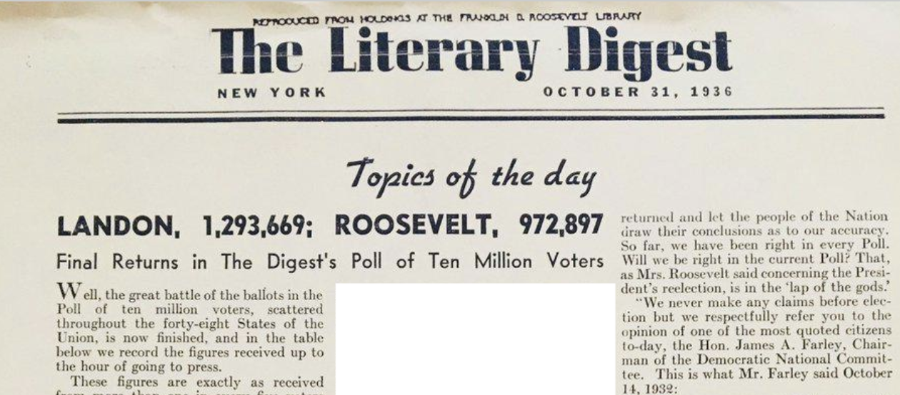
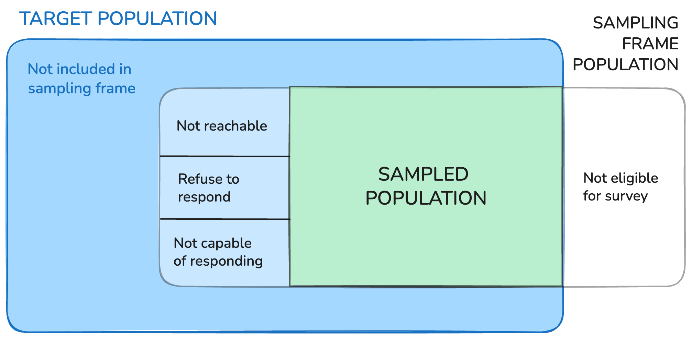
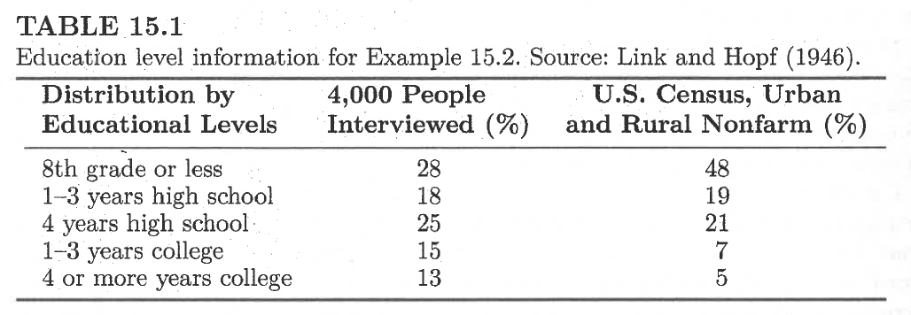
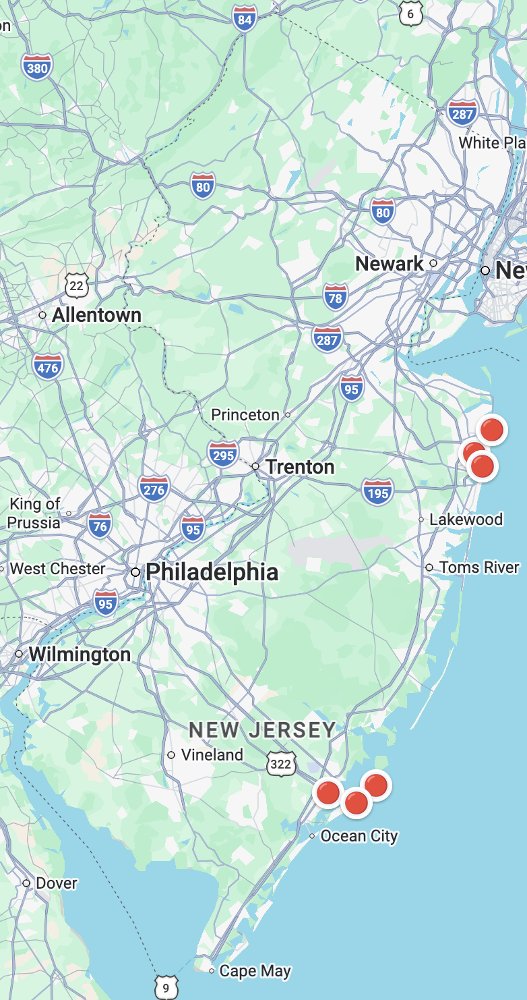

nrow(airquality)[1] 153sample_air <- airquality |>
slice_sample(n = 20, replace = F)Terminology, Types of Samples, and Simple Random Sampling
Lecture based on Sampling Design and Analysis 3rd Edition by Sharon L. Lohr Chapters 1, 2, and 15. Figures are from this text or recreated based on figures from the text unless otherwise noted!
The Literary Digest boasted that they polled 10 million voters across the 48 states in the US in October 1936. For each voter polled, they sent out a “straw ballot” and asked that it be mailed back once completed. Out of the 2.3 million ballots returned, 1,293,699 said they planned to vote for for Landon, and 972,897 for Roosevelt. The list of 10 million voters primarily came from car registration lists and telephone books. (Source: Squire, 1988)

Observational unit: (or element or measurement unit): object on which a measurement is taken
Target population: complete collection of observations we want to study (\(N\))
Sample subset of a population (\(n\))
Non-overlapping collections fo elements from the population that cover the entire population.
When might observational units and sampling units be different?
Sampling frame: A list of sampling units from which a sample may be selected.
Sampled population the collection of all possible observational units that might have been chosen in a sample; the population from which the sample was actually taken.
Sample (refining this): collection of sampling units drawn from the sampling frame(s)

Primary consideration for selecting the sample is how easy it is to recruit the units
Examples:

Link, H. C., & Hopf, H. A. (1946). People and books; a study of reading and book-buying habits. Book Manufacturers Institute.
Quota factors: area, city size, age, sex, and socioeconomic status
Psychologist determined the blocks of the city
Interview people from a specified socioeconomic group.
Interviewers were allowed to choose the specific households.
n = 4,000

… oversampled more educated readers
These cities were chosen because they are located on the coast, and they all experienced similar disaster affects, such as damages due to flooding, storm surge, and windshear. Rivera (2016)

Consider the finite population of \(N = 4\) units: \(\{1, 2, 3, 4\}\)
Possible samples of \(n=2\)?
Each possible sample \(\mathcal{S}\) has a known probability of being chosen \(P(\mathcal{S})\)
The differences in how we assign these probabilities is what distinguishes different probability sampling designs!
Example samples: \(\mathcal{S}_1 = \{1,2\}, \mathcal{S}_2 = \{1,3\}, \mathcal{S}_3 = \{1,4\}, \mathcal{S}_4 = \{2,3\}, \mathcal{S}_5 = \{2,4\}, \mathcal{S}_6 = \{3,4\}\)
Example samples: \(\mathcal{S}_1 = \{1,2\}, \mathcal{S}_2 = \{1,3\}, \mathcal{S}_3 = \{1,4\}, \mathcal{S}_4 = \{2,3\}, \mathcal{S}_5 = \{2,4\}, \mathcal{S}_6 = \{3,4\}\)
\[P(\mathcal{S}) = \frac{1}{\binom{N}{n}}\] \(\pi_i = \frac{\text{total number of samples that contain unit } i}{\text{total number of samples of size } n}\)
With a dataset:
nrow(airquality)[1] 153sample_air <- airquality |>
slice_sample(n = 20, replace = F)sample_air| Ozone | Solar.R | Wind | Temp | Month | Day |
|---|---|---|---|---|---|
| 79 | 187 | 5.1 | 87 | 7 | 19 |
| NA | 286 | 8.6 | 78 | 6 | 1 |
| 24 | 238 | 10.3 | 68 | 9 | 19 |
| 8 | 19 | 20.1 | 61 | 5 | 9 |
| 14 | 334 | 11.5 | 64 | 5 | 16 |
| 64 | 175 | 4.6 | 83 | 7 | 5 |
| 71 | 291 | 13.8 | 90 | 6 | 9 |
| NA | 98 | 11.5 | 80 | 6 | 28 |
| NA | 287 | 9.7 | 74 | 6 | 2 |
| 32 | 92 | 12.0 | 61 | 5 | 24 |
| 32 | 236 | 9.2 | 81 | 7 | 3 |
| 97 | 272 | 5.7 | 92 | 7 | 9 |
| 36 | 118 | 8.0 | 72 | 5 | 2 |
| 13 | 27 | 10.3 | 76 | 9 | 18 |
| 108 | 223 | 8.0 | 85 | 7 | 25 |
| 63 | 220 | 11.5 | 85 | 7 | 20 |
| NA | 101 | 10.9 | 84 | 7 | 4 |
| 21 | 230 | 10.9 | 75 | 9 | 9 |
| 22 | 71 | 10.3 | 77 | 8 | 16 |
| 29 | 127 | 9.7 | 82 | 6 | 7 |
With a vector:
ids_vec <- 1:100
sample_ids <- sample(ids_vec,
size = 20,
replace = F)
sample_ids [1] 65 85 58 80 95 27 63 88 38 69 72 100 49 9 98 23 1 35 8
[20] 29undercoverage: sampling frame does not include every element of the population
overcoverage: sampling frame includes units not in the target population, or units not in the target population are not screened out of the sample, or double-counted
Low response rates are not inherently bad
Only cause issues if there are systematic differences between the units that did versus did not respond
A high response rate could still miss an important part of the population
A low response rate could still be informative IF the nonrespondents looked like the respondents in all important characteristics